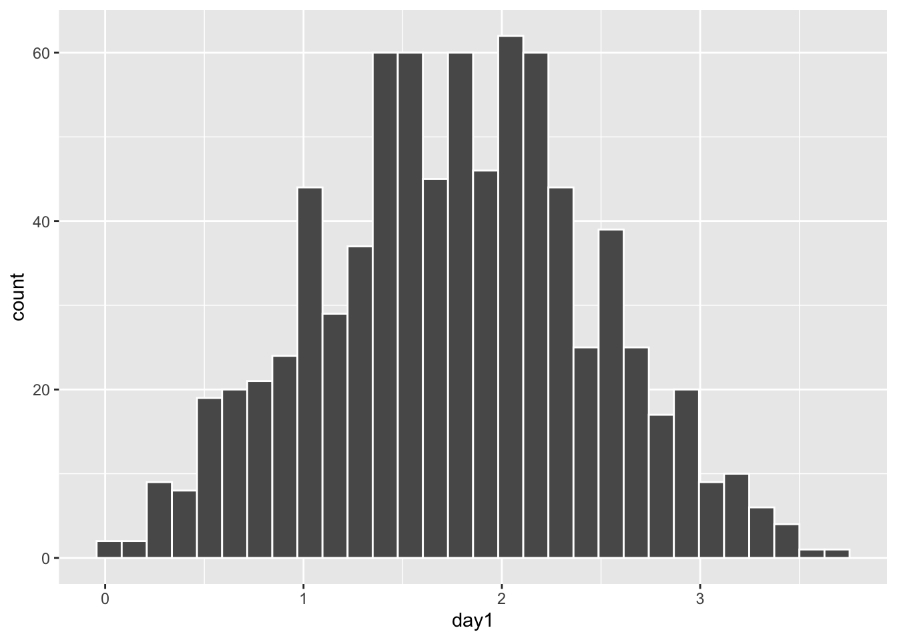
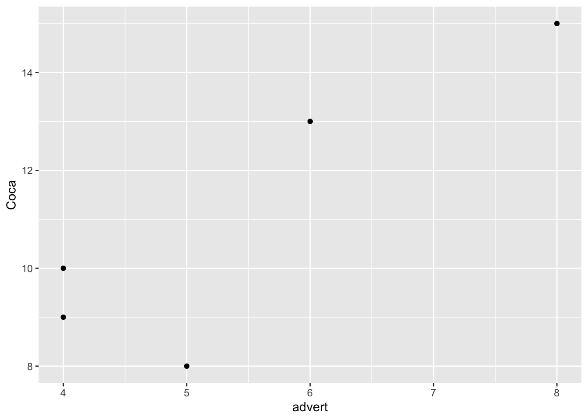
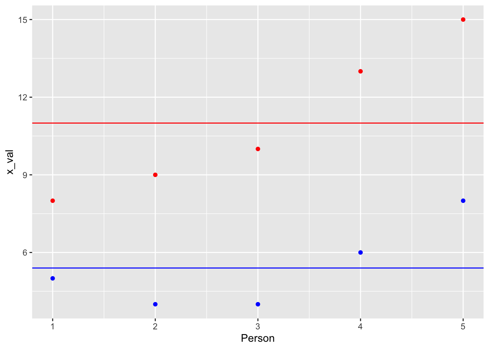
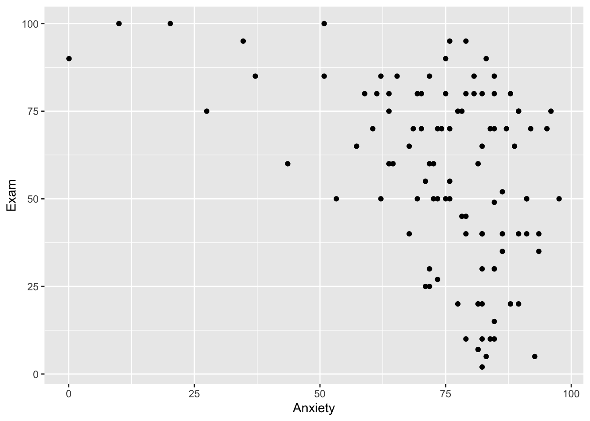
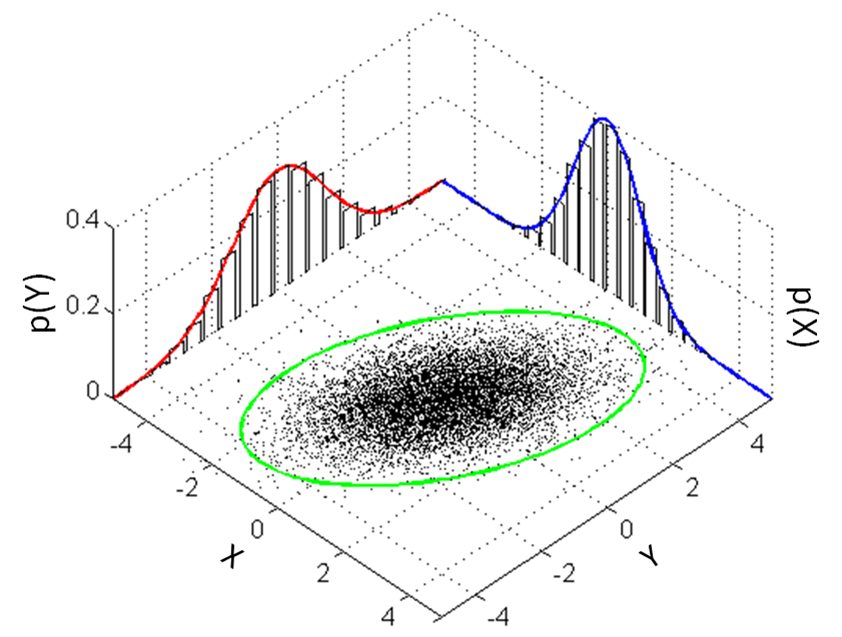
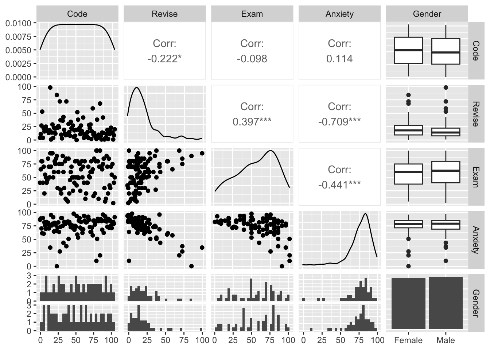
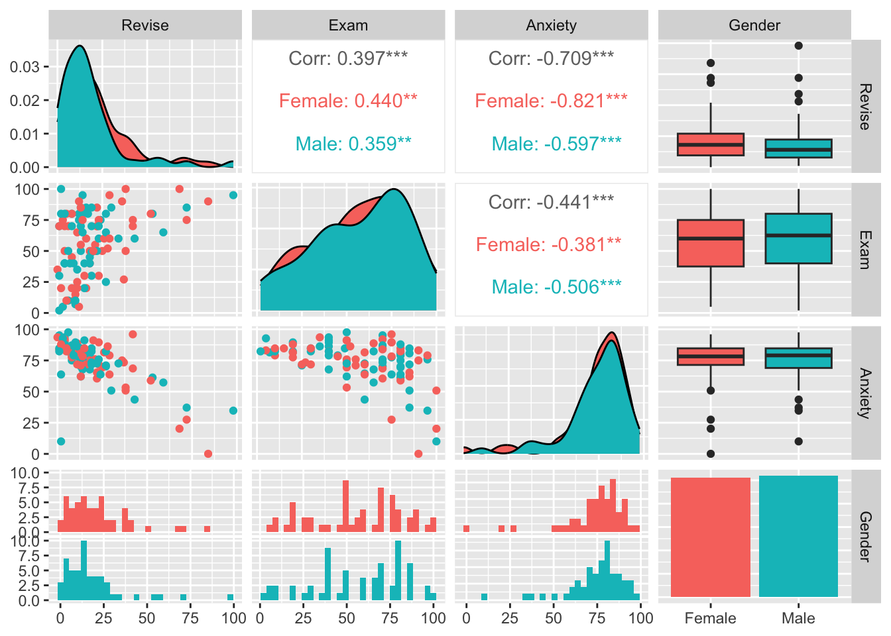
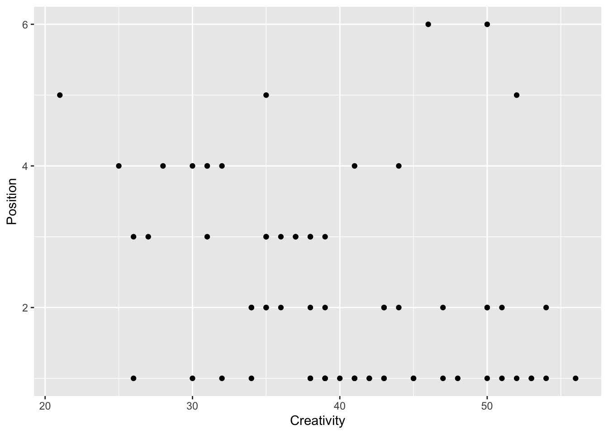

Capítulo 17 Correlación y Covarianza
Fecha de la última revisión
## [1] "2026-08-01"

library(readr)
DownloadFestival <- read_csv("Data_files_csv/DownloadFestival.csv")
dlf=DownloadFestival # usa un nombre más corto para el data.frame y facilitar el trabajo
head(dlf)| ticknumb | gender | day1 | day2 | day3 |
|---|---|---|---|---|
| 2.11e+03 | Male | 2.64 | 1.35 | 1.61 |
| 2.23e+03 | Female | 0.97 | 1.41 | 0.29 |
| 2.34e+03 | Male | 0.84 | ||
| 2.38e+03 | Female | 3.03 | ||
| 2.4e+03 | Female | 0.88 | 0.08 | |
| 2.40e+03 | Male | 0.85 |
tail(dlf)| ticknumb | gender | day1 | day2 | day3 |
|---|---|---|---|---|
| 4.75e+03 | Female | 0.52 | ||
| 4.76e+03 | Female | 2.91 | 0.94 | |
| 4.76e+03 | Female | 2.61 | 1.44 | |
| 4.76e+03 | Female | 1.47 | ||
| 4.76e+03 | Male | 1.28 | ||
| 4.76e+03 | Female | 1.26 |
summary(dlf)## ticknumb gender day1 day2
## Min. :2111 Length :810 Min. : 0.020 Min. :0.0000
## 1st Qu.:3096 N.unique : 2 1st Qu.: 1.312 1st Qu.:0.4100
## Median :3620 N.blank : 0 Median : 1.790 Median :0.7900
## Mean :3616 Min.nchar: 4 Mean : 1.793 Mean :0.9609
## 3rd Qu.:4155 Max.nchar: 6 3rd Qu.: 2.230 3rd Qu.:1.3500
## Max. :4765 Max. :20.020 Max. :3.4400
## NAs :546
## day3
## Min. :0.0200
## 1st Qu.:0.4400
## Median :0.7600
## Mean :0.9765
## 3rd Qu.:1.5250
## Max. :3.4100
## NAs :687
dlf2=subset(dlf, dlf$day1<5)
ggplot(dlf2, aes(day1))+
geom_histogram(color="white")
| ticknumb | gender | day1 | day2 | day3 |
|---|---|---|---|---|
| 2.11e+03 | Male | 2.64 | 1.35 | 1.61 |
| 2.23e+03 | Female | 0.97 | 1.41 | 0.29 |
| 2.34e+03 | Male | 0.84 | ||
| 2.38e+03 | Female | 3.03 | ||
| 2.4e+03 | Female | 0.88 | 0.08 | |
| 2.40e+03 | Male | 0.85 |
17.1 Un desvío por el turbio mundo de la covarianza
Covarianza vs. correlación. La covarianza mide si dos variables varían juntas, pero su magnitud depende de las unidades de medida, por lo que es difícil de interpretar. La correlación (r) estandariza la covarianza dividiéndola entre el producto de las desviaciones estándar, de modo que siempre queda entre \(-1\) y \(+1\), sin importar las unidades.
El objetivo es evaluar si dos variables covarían, es decir, si una variable explica en parte la variación de la otra.
| Advert watched | 5 | 4 | 4 | 6 | 8 |
|---|---|---|---|---|---|
| Packets bought | 8 | 9 | 10 | 13 | 15 |
17.1.1 Para entender la covarianza primero hay que entender la ecuación de la varianza
Varianza de una sola variable \[s^{ 2 }=\frac { \sum { { ({ x }_{ i }-\bar { x } ) }^{ 2 } } }{ n-1 }\]
17.1.2 La covarianza es el producto cruzado de las desviaciones
Covarianza \[cov(x,y)=\frac { \sum { ({ x }_{ i }-\bar { x })({ y }_{ i }-\bar { y }) } }{ n-1 } \]
advert=c(5,4,4,6,8)
Coca=c(8,9,10,13,15)
data=data.frame(advert,Coca)
data| advert | Coca |
|---|---|
| 5 | 8 |
| 4 | 9 |
| 4 | 10 |
| 6 | 13 |
| 8 | 15 |
mean_advert=mean(data$advert)
mean_Coca=mean(data$Coca)
data$diff_advert=data$advert-mean_advert
data$diff_Coca=data$Coca-mean_Coca
data| advert | Coca | diff_advert | diff_Coca |
|---|---|---|---|
| 5 | 8 | -0.4 | -3 |
| 4 | 9 | -1.4 | -2 |
| 4 | 10 | -1.4 | -1 |
| 6 | 13 | 0.6 | 2 |
| 8 | 15 | 2.6 | 4 |
## [1] 4.25
ggplot(data)+
geom_point(aes(x=advert, y=Coca))
x_val=c(5,4,4,6,8)
y_val=c(8,9,10,13,15)
Person=c(1,2,3,4,5)
meanx=mean(x_val)
df=data.frame(Person,x_val,y_val)
df| Person | x_val | y_val |
|---|---|---|
| 1 | 5 | 8 |
| 2 | 4 | 9 |
| 3 | 4 | 10 |
| 4 | 6 | 13 |
| 5 | 8 | 15 |
ggplot(df)+
geom_point(data=df, aes(x=Person,y=x_val),colour="Blue")+
geom_point(data=df,aes(x=Person,y=y_val), colour="red")+
geom_hline(aes(yintercept=mean(df$x_val)),colour="Blue")+
geom_hline(aes(yintercept=mean(df$y_val)),colour="red")
Como en la mayoría de los casos las variables se miden en escalas diferentes, tenemos que estandarizarlas usando la desviación estándar.
17.2 Por eso usamos el coeficiente de correlación
17.2.1 El más común es el coeficiente de correlación producto-momento de Pearson
\[r=\frac { cov(x,y) }{ { s }_{ x }{ s }_{ y } } =\frac { \sum { ({ x }_{ i }-\bar { x })({ y }_{ i }-\bar { y }) } }{ (n-1)\, { s }_{ x }{ s }_{ y } }\]
La función para calcular el coeficiente de correlación es cor().
La función para determinar si la correlación entre las 2 variables es significativa (es decir, diferente de cero) es cor.test().
## [1] 0.8711651
r^2## [1] 0.7589286
cor.test(data$advert, data$Coca)##
## Pearson's product-moment correlation
##
## data: data$advert and data$Coca
## t = 3.0732, df = 3, p-value = 0.05443
## alternative hypothesis: true correlation is not equal to 0
## 95 percent confidence interval:
## -0.0479747 0.9914236
## sample estimates:
## cor
## 0.8711651El cuadrado del coeficiente de correlación, \({ R }^{ 2 }\) (conocido como el coeficiente de determinación), es una medida de la cantidad de variabilidad de una variable que es compartida por la otra.
Correlación no implica causalidad. Una correlación fuerte entre dos variables no prueba que una cause la otra; ambas podrían estar influidas por una tercera variable, o la relación podría ser una coincidencia. La correlación solo describe cuánto se asocian linealmente dos variables.
Tabla resumen de las pruebas de correlación:
- Prueba de Pearson: asume una distribución normal bivariada.
- Prueba de Spearman: no asume normalidad.
- Prueba de Kendall: no asume normalidad, mejor cuando el tamaño de muestra es pequeño.
Veamos la relación entre la ansiedad y los resultados de los exámenes.
Elige el conjunto de datos examData.
library(readr)
Exam_Anxiety <- read_csv("Data_files_csv/Exam Anxiety.csv")
examData=Exam_Anxiety
head(examData)| Code | Revise | Exam | Anxiety | Gender |
|---|---|---|---|---|
| 1 | 4 | 40 | 86.3 | Male |
| 2 | 11 | 65 | 88.7 | Female |
| 3 | 27 | 80 | 70.2 | Male |
| 4 | 53 | 80 | 61.3 | Male |
| 5 | 4 | 40 | 89.5 | Male |
| 6 | 22 | 70 | 60.5 | Female |
ggplot(examData, aes(y=Exam, x=Anxiety))+
geom_point()
cor.test(examData$Exam,examData$Anxiety)##
## Pearson's product-moment correlation
##
## data: examData$Exam and examData$Anxiety
## t = -4.938, df = 101, p-value = 3.128e-06
## alternative hypothesis: true correlation is not equal to 0
## 95 percent confidence interval:
## -0.5846244 -0.2705591
## sample estimates:
## cor
## -0.4409934La correlación de Pearson asume: una relación lineal entre las variables, una distribución normal bivariada, y ausencia de valores atípicos extremos (que pueden distorsionar mucho a r). Si estos supuestos no se cumplen, usa Spearman o Kendall.
Uno de los supuestos básicos de la correlación de Pearson es que los datos tengan una distribución normal bivariada. NOTA: lo que queremos decir con el “supuesto” es que confiamos en que el universo (la población) tiene una distribución normal, no necesariamente que nuestros datos (la muestra) la tengan.
library(knitr)
library(png)
img3_path<-"Graficos/Bivariate_normal.png"
include_graphics(img3_path)
17.3 ¿Qué significa esto?
Aquí hay un gráfico muy útil que produce las figuras y la mayor parte del análisis de una sola vez. Con el paquete GGally, si omites “ggplot2::aes(colour=Gender)”, la figura será en blanco y negro y no estará separada por género.
| Code | Revise | Exam | Anxiety | Gender |
|---|---|---|---|---|
| 1 | 4 | 40 | 86.3 | Male |
| 2 | 11 | 65 | 88.7 | Female |
| 3 | 27 | 80 | 70.2 | Male |
| 4 | 53 | 80 | 61.3 | Male |
| 5 | 4 | 40 | 89.5 | Male |
| 6 | 22 | 70 | 60.5 | Female |
ggpairs(examData)
#ggpairs(examData, ggplot2::aes(colour=Gender))En este código eliminé la primera columna, que es solamente el código del individuo, usando examData[,c(2:5)] (es decir, quitando la columna #1).

Usa el siguiente conjunto de datos, con las variables:
- Flower Size = tamaño de la flor
- Num_Fr = número de frutos
- w_sepals_dorsal = ancho del sépalo dorsal
- front_lip_length = largo del labio frontal
- wf = un índice de selección femenina
library(readr)
Lep_rupPetal_All_Data <- read_csv("Data_files_csv/Lep_rupPetal_All_Data.csv")
Lep=Lep_rupPetal_All_Data
names(Lep)## [1] "Plant_Number" "Petal_Character" "Population" "Num_FR"
## [5] "Sqrt_NumFR" "Rank_Fruits" "Num_PR" "Num_PP"
## [9] "Perc_PR" "Perc_FR" "Num_flowers" "wm"
## [13] "wf" "Nfl stand to 1 V" "L_column" "X2_ L_column"
## [17] "Flower_size" "w_sepals_dorsal" "Lpostpetallobe" "wpostpetallobe"
## [21] "lantpetallobe" "front_lip_length" "front_lip_lenght" "Front_lip_width"
## [25] "midlobe_lenght" "anther_cap_open" "dist_b_w_sepals" "ST_L _column"
## [29] "w_mf" "ST_L_column2" "Sqrt_Num_Fl0.5" "Log_flower size"
## [33] "Arcsin_Perc_FR"Una tabla de los coeficientes de correlación
## Exam Anxiety Revise
## Exam 1.00 -0.44 0.40
## Anxiety -0.44 1.00 -0.71
## Revise 0.40 -0.71 1.00
##
## n= 103
##
##
## P
## Exam Anxiety Revise
## Exam 0 0
## Anxiety 0 0
## Revise 0 0Cuando los datos no cumplen con el supuesto de normalidad, hay que usar Spearman o Kendall.
Spearman y Kendall son correlaciones de rango (usan el orden de los datos, no sus valores), por lo que son robustas ante la no-normalidad y los valores atípicos. Kendall suele preferirse cuando el tamaño de muestra es pequeño o hay muchos empates.
Elige el conjunto de datos “The Biggest Liar.csv”, un concurso que ocurre cada año en un pub.
El “World’s Biggest Liar” (El mentiroso más grande del mundo) es una competencia anual para decir mentiras, celebrada en Cumbria, Inglaterra, en el Stanton Inn Bridge Pub.
library(knitr)
library(png)
img4_path<-"Graficos/Stanton.png"
include_graphics(img4_path)
library(Hmisc)
library(readr)
The_Biggest_Liar <- read_csv("Data_files_csv/The Biggest Liar.csv")
liarData=The_Biggest_Liar
head(liarData)| Creativity | Position | Novice |
|---|---|---|
| 53 | 1 | 0 |
| 36 | 3 | 1 |
| 31 | 4 | 0 |
| 43 | 2 | 0 |
| 30 | 4 | 1 |
| 41 | 1 | 0 |
cor(liarData$Position, liarData$Creativity, method = "pearson")## [1] -0.3060314
cor(liarData$Position, liarData$Creativity, method = "spearman")## [1] -0.3732184
cor(liarData$Position, liarData$Creativity, method = "kendall")## [1] -0.300241317.4 Material adicional
17.4.1 Correlación por bootstrap
Con el bootstrap no hay necesidad de hacer supuestos sobre la distribución: puedes dejar que los datos hablen por sí mismos y construir el coeficiente de correlación y su intervalo de confianza de 95%.
Primero creamos una función:
bootTau=function(liarData,i)cor(liarData$Position[i],liarData$Creativity[i],
use="complete.obs",method = "kendall")Luego se llama y se ejecuta la función:
Para calcular el intervalo de confianza de 95%:
boot.ci(boot_kendall)
ggplot(liarData, aes(Creativity, Position))+
geom_point()